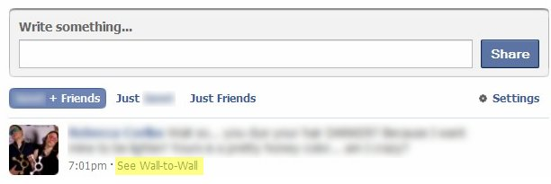

The Facebook Fail
Or the Bug which was not one...
- Y
Facebook faced yesterday (September 24, 2012) one of the biggest critical situations of its history, a trust-based crisis due to old posts featuring potentially some intimate information made easily visible on Facebook profiles, or Timelines. The origin of this situation is not technical but comes mainly from the Facebook’s “usual” lack of prospectiveness concerning the concept of privacy. Now, such an eye-opening experience was necessary both for the company and its users, and some lessons should be clearly learned here. But will they?
The Facts
The French newspaper Metro reported on Monday 24th September around 4pm (Paris time) a privacy problem regarding some posts published before 2010 displayed on the Facebook timeline of a few users. The latter posts were then thought to be old private messages that Facebook had involuntary made publicly available on the profiles of its users. The news was quickly relayed by other French and international newspapers and soon Facebook had to deal with an important critical situation about what was considered by users of the social platform as a bug endangering their privacy and intimacy. Now and very interestingly, all this was not due to a technical bug but to a profund deficiency of Facebook and its users.
At this stage of the development, it seems important to remind ourselves that the Timeline was introduced exactly one year ago at the F8 conference (September 22, 2011) and was since rolled out, first on a voluntary basis and then became the default Facebook profile. Note that one of the latest country where the Timeline was globally put in place is France. The principle of the Facebook Timeline is straightforward: to propose a kind of journal for every user of the social networking website, recomposing his/her life (eDNA) from birth to death. The Timeline is a pretty successfully completed information gathering tool which plays on our narcissism and rests on the Open Graph to collect a large amount of data about ourselves. The main issue I already emphasized in a previous blog post is that it tends to develop a model where the process of interacting online and sharing data is automatized in such a way that individuals are no longer accountable for their actions and are not aware of interacting anymore; this is what I call the Homo-Facebookiens.
Yesterday’s events highlighted very clearly the limits of the current Homo-Facebookiens model: you cannot build trust on interactions unawareness. Put otherwise, the trustor (i.e. a Facebook user) always needs to know when and how she/he interacts with the trustee (i.e. Facebook).
This is not a Bug
No, this is not a technical bug! Actually, the same “issue” had already been highlighted by a Finnish news site in December 2011. So the “discovery” of Metro France was nothing new. As stated by Facebook on the 24th of September:
“A small number of users raised concerns after what they mistakenly believed to be private messages appeared on their Timeline. Our engineers investigated these reports and found that the messages were older wall posts that had always been visible on the users’ profile pages. […]”
The private nature of some posts observed yesterday by Facebook users comes simply from the first model of communication Facebook was using before 2010, the so-called “wall-to-wall” conversations.
The Wall-to-Wall conversations
OK, let’s go back to the young years of Facebook! In those days, wall posts didn’t have comments, nor “like” buttons (see screenshot below).
Conversations on the social platform were mainly powered by wall-to-wall conversations, e.g. I was writing something on your wall and you were replying on mine. Such communications were possibly more intimate than today because of the following two dimensions:
- Our friends’ network was smaller and less heterogenous back then.
- By its very nature, the fact to disseminate the flow of a conversation between the respective profiles of users X and Y was decreasing the probability for a user Z to get a whole picture of the conversation, if Z was only friend with X or Y.
The Database Architecture
Moreover, messages and wall posts are stored in two different databases, making extremely difficult any voluntary or involuntary manipulation that would lead to a mix of those two types of data.
Indeed and as explained by a Facebook employee, the messages backend is hbase-backed, designed for real-time communication more than history and the timeline backend is MySQL / C++ backed. Migrating data from hbase to MySQL would then have to take months of effort.
… This is a Fail
No, this is definitely not a technical bug, but a conceptual bug/fail… and a serious one which takes its roots in the way Mark Zuckerberg envisages social interactions, and especially “privacy”. Mark wants to build a platform able to become the repository of our lives online and offline, and to achieve this, he feels that our approach towards privacy must change. To make his message clearer, he even built a kind of provocative persona who is thought to not believe in privacy.
Now, I agree with Zuck that our definition of what is “privacy” must change [and has already changed thanks to Facebook, among others] if we wish to take full advantage of the Internet. However, the current way of enforcing such changes is not sustainable in the mid/long-term given its lack of respect, prospectiveness and transparency… and what happened yesterday is a perfect illustration of the potential future problems of a Homo-Facebookiens model à la Zuck.
Transparency
The current vision at Facebook is that people will change their way of considering what is privacy by enforcing straightforward changes within the platform, e.g. the Timeline. This causation model is incomplete and lacks a crucial variable, i.e. transparency. Transparency means and implies that users are aware of the consequences of their actions within the platform, e.g. some Facebook users were not aware that old and possibly intimate posts were visible on their Facebook Timelines. Awareness of interacting is then necessary to trust, and trust will create a sustainable and natural basis for behavioral changes1.
By omitting transparency, Facebook cannot guarantee trustworthy interactions within its own eco-system in the long-term, and so cannot develop a sound new paradigm for privacy. This leads me to the lack of prospectiveness of the Facebook method.
Prospectiveness
Prospectiveness or the fact to envisage the future effects of past and current decisions. Here, Facebook clearly did not take sufficiently into account the effects of its “wall-to-wall” conversations model on its current interaction model. This is not new…
Respect
The Facebook business model is such that advertisers are the customers and Facebook users are the “commodity”. Given this economic configuration, it sometimes seems difficult for Facebook to remember that even if its users are not its prime customers, they are still crucial to its survival and should be handled carefully. Now, when facing this kind of crisis, it appears then good to invest a bit more time and energy concerning your PR. The official statement Facebook made about yesterday’s events is as follows:
“A small number of users raised concerns after what they mistakenly believed to be private messages appeared on their Timeline. Our engineers investigated these reports and found that the messages were older wall posts that had always been visible on the users’ profile pages. Facebook is satisfied that there has been no breach of user privacy.”
Phrased differently, our users are stupid and we cannot do anything about that! Even if this were true, there is certainly a better way to communicate about an issue that exists in the first place because of a conceptual fail, nothing else.
The Commission nationale de l’informatique et des libertés (CNIL)
This bug is currently investigated by the CNIL, an independent French administrative authority whose mission is to ensure that data privacy law is applied to the collection, storage, and use of personal data (Wikipedia). The final report should be published in the coming days and available on the CNIL official website.
Resources
- Trust is understood as a relation grounded on the trustor’s beliefs about the trustee’s capabilities (e.g. its reliability) and about the context in which the relation occurs. Trust implies then a trustor conscious of interacting with the trustee. This is a generalisation of the definition of trust provided by Gambetta; Gambetta, D. (1998), Can We Trust Trust?. In D. Gambetta (Ed.), Trust: Making and Breaking Cooperative Relations (213-238). Oxford: Basil Blackwell.
- How to remove all your old Facebook wall posts, public or private, from your Timeline by TheNextWeb.com
Like it? Please share. Also feel free to leave your comments below.
blog comments powered by Disqus
This is the weblog of Florian Bersier; a PhD candidate at the Oxford Internet Institute, Oxford University, an open-source advocate and an aspiring hacker. ··· learn more ···
-

I Know Who You are! What your Browser Can Reveal About Yourself... 17 December 2012
-

The Facebook Fail Or the Bug which was not one... 25 September 2012
-

Implementation of Social Sharing into Jekyll How to add social sharing buttons to your Jekyll Powered Blog 04 September 2012
-

Lettre Ouverte aux Candidats de l'Élection Présidentielle 2012 (FR) Perspectives Numériques, Sur le Besoin d'Abroger Hadopi 12 January 2012
-

Primaires Socialistes en France (FR) Analyse de la présence Web des différents candidats 04 October 2011
-

How Homo-Facebookiens will kill Homo-Sapiens? Or How Facebook Envisions the Future of Our Digital Lives And Why It's Not a Good Idea 23 September 2011